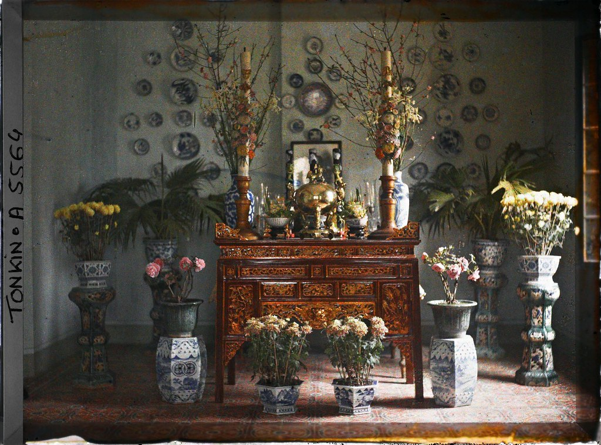
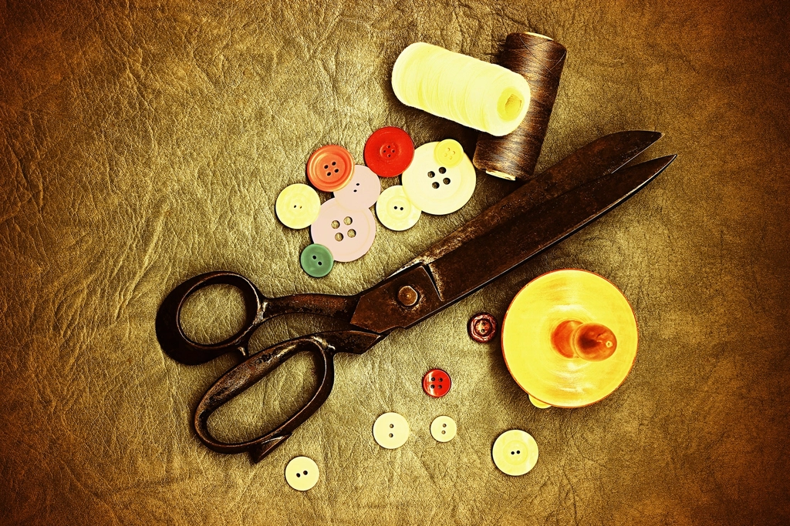
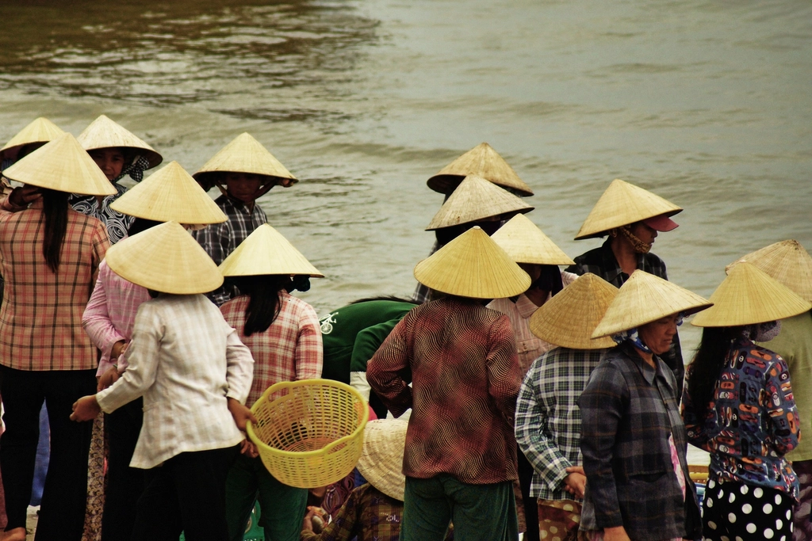
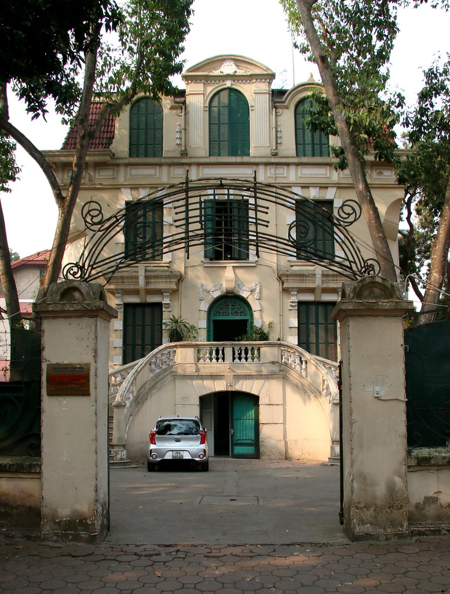
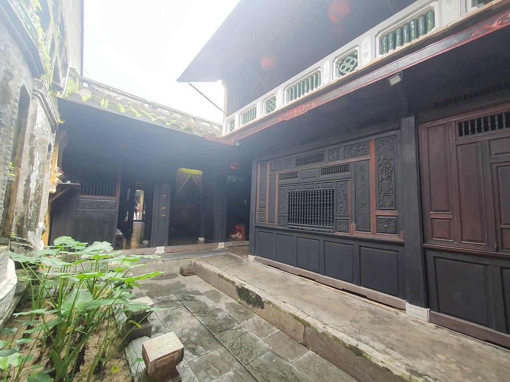
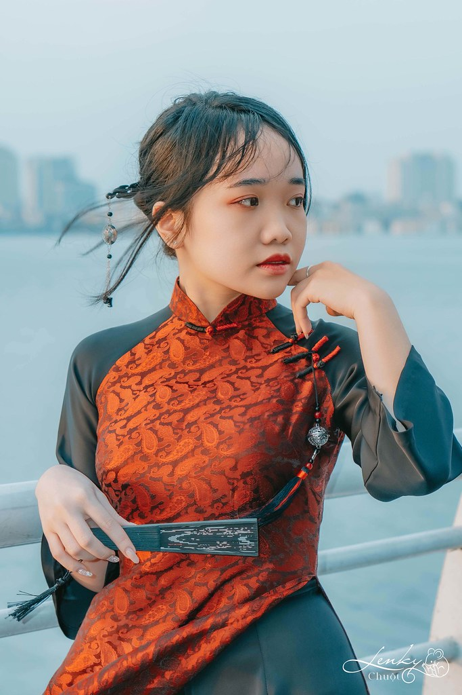
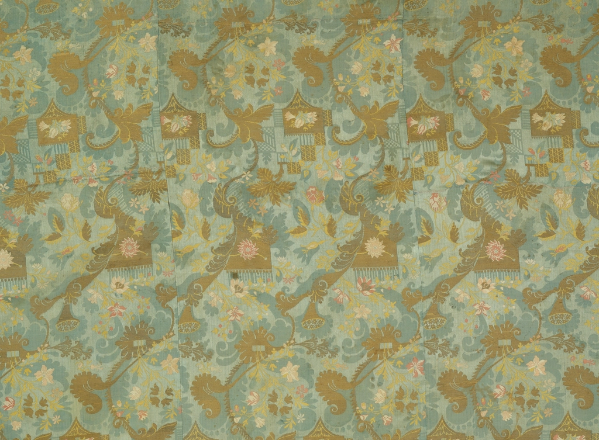
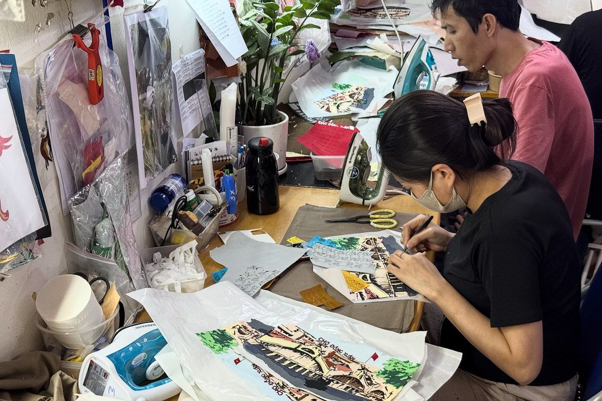

Inspired design
Nếp Gấm Folds of Brocade
Patterned silk set against plain black sleeves, the way a lining shows at the cuff.
Inspiration: brocade and fabric knot buttons. Details: paired knots, raglan sleeve, tasselled pin.
Vietnamese heritage, historical fashion
An Nam Ký studies Vietnamese dress across its eras, then retells those stories through clothing made for today.


An Nam Ký began as a notebook. We collected photographs, museum notes and conversations with tailors, trying to understand what our grandparents wore and why.
Every collection starts with research. We read sources, visit archives and talk to craftspeople before we cut. When we reinterpret, we say so. When we are unsure, we keep looking.

“We do not sell the past. We try to listen to it carefully, then answer in our own voice.”
Vietnamese heritage
We keep court robes apart from village clothing, artifacts apart from reconstructions, and history apart from our own designs. Every image on this page carries a label.
Hue was the capital of the Nguyen dynasty, and its court dressed by codes of rank, colour and occasion. We study surviving garments in museum collections before drawing a line, and we never present one of our designs as a court robe.


The áo dài did not appear in a single moment. It grew out of earlier long robes, and each period changed its collar, sleeve and fit. We look at every version on its own terms, rather than as one timeless dress.

Conical hats, plain shirts and working trousers tell us about weather, labour and markets. This is clothing shaped by use, and it deserves the same attention we give to ceremony.

Silk and gauze, knotted buttons, collars, carved and woven motifs. We record how a garment is made, from the cut of a panel to the knot of a fabric button, and we credit the workshops that still do this by hand.
Design stories, not a catalogue. Each one names its source of inspiration, and nothing here is for sale online.
Inspired design
Patterned silk set against plain black sleeves, the way a lining shows at the cuff.
Inspiration: brocade and fabric knot buttons. Details: paired knots, raglan sleeve, tasselled pin.

Inspired design
Old city streets, shutters and wrought iron, translated into structured outer layers.
Inspiration: Hanoi facades. Details: shutter-green lining, arched yoke seams.

Inspired design
Faded lacquer, tea-stained paper and the soft colours of early photographs.
Inspiration: archive prints and old houses. Details: silk dyed by hand in four muted tones.

Inspired design
The long tunic line, recut for walking, cycling and working in the city today.
Inspiration: the long robe. Details: shorter side slits, bell sleeve, removable collar.
What sits on our desk before a collection begins: architecture, colour, notes in the margin and the sources we still need to check.
Anything marked "to verify" is not yet confirmed. We publish it only after checking.
Note, 3 Oct
Collar height differs between sources. Check museum measurements before drafting the pattern.
Palette for winter

Pattern draft, sample sizes
Source to verify
Museum catalogue of Nguyen court textiles. Edition and page numbers pending.
Designs inspired by heritage, photographed on the river at dusk. Photography by Chuột Lenky.
IV
The fourth chapter is in production, shot among old shophouses this winter.
Ask to be notified
We spent a day with textile painters turning old Hanoi street scenes into fabric panels. Notes on process, pigment and patience.
Before we write about the five-panel robe, we share the books and catalogues we are reading, and what each one argues.
Why every image on this site carries a label, and what each label promises.
On buttons, dyes and seams: what we hope to learn from the workshops we visit next.
Collaborate
We welcome researchers, museums, curators and cultural projects. Write to us about research, exhibitions or a shared archive.